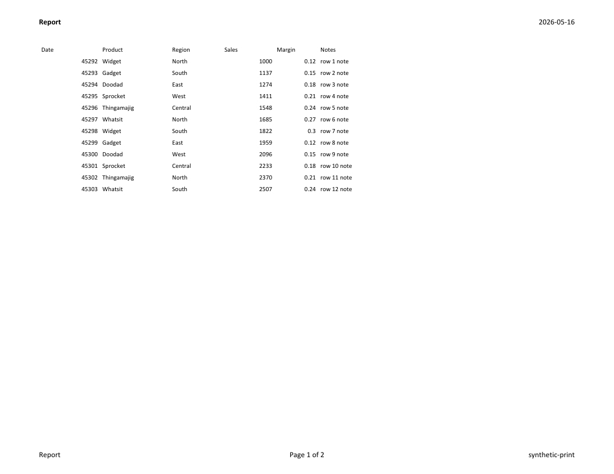

<rowBreaks> entry after row 13 forced the split here), body rows 14–25 (the print area stops at row 25 — rows 26–31 of the source are dropped, as Excel does), footer reads "Page 2 of 2".Fix: wire the XLSX → model → PDF pipeline that was missing end-to-end, in five phases.
src/Office.Formats/src/XlsxReader.fs: newPageMargins/PageSetup/PrintOptions/HeaderFootertypes.WorksheetgainsPageSetup,PageMargins,PrintOptions,HeaderFooter,RowBreaks,ColBreaks,PrintArea,PrintTitleRows,PrintTitleCols. New parsers for<pageSetup>,<pageMargins>,<printOptions>,<headerFooter>,<rowBreaks>,<colBreaks>, and thefitToPageflag on<sheetPr><pageSetUpPr>.NamedRanges.splitPrintNamespulls_xlnm.Print_Area/_xlnm.Print_Titlesout of the workbook's name list, groups them per sheet bylocalSheetId, and drops other_xlnm.*built-ins.src/Spreadsheet/Model.fs: newPageSetuprecord (page width / height in points, orientation, margins, fit-to-page, manual breaks, print area, repeat rows / cols, print options, header / footer).SpreadsheetModelgainsPageSetup(always present, defaulted to US Letter portrait with 0.75 inch margins).paperSizePointsmaps the OOXML paper-size codes (1 = Letter, 9 = A4, …) to point dimensions.tools/excel-native-runner/Program.fs:toModeltranslates the parsed Xlsx print fields into the model'sPageSetup— paper-size + orientation pick width / height (and swap for landscape), margins copy through, print area / title rows / title cols parse into 0-indexed ranges.src/Spreadsheet.Pdf/HeaderFooter.fs(new): Excel's&L/&C/&Rsection parser plus per-page field substitution (&Ppage number,&Ntotal pages,&Asheet name,&Ffile,&Zfile path,&Ddate,&Ttime,&&escape). Style-only codes (&Bbold,&"Font,Style",&NNsize,&K{hex}) are consumed silently. Pure string logic — no PDF deps — so it's liftable to a cross-document shared layer.src/Spreadsheet.Pdf/Pagination.fs(new): 2D page-break computation. Honors print area, margins, manual row / col breaks (which force closure regardless of accumulated size), fit-to-page scaling (measured againstFitToWidth×FitToHeightpages of available area), repeat rows / cols (steal space from every page, and the body range skips them so they don't render twice on page 1). Emits pages in Excel's "down then over" order.src/Spreadsheet.Pdf/Pdf.fs:translateItemtakes aPlacementrecord so margin offset, page height (for Y-flip), and fit-to-page scale bake into every coordinate uniformly.sliceItemsbuilds the paint items for one slice with chrome (column letters / row numbers) suppressed and degenerate zero-size chrome items filtered out. Each page composes body + repeat-rows band + repeat-cols band + repeat corner.sectionOpsemits header / footer in PDF coords directly (no scale, no Y-flip), placed in the top / bottom margin bands; their glyphs are recorded in the GID set before subset embed so embedded fonts include them.
- Focused guard: synthetic-print.xlsx committed under
tests/test-documents-excel/. The structural check is "2 landscape pages, repeat header on each, rows split at the manual break, footer reflects &P / &N / &A / &F field codes." A newtests/print/helpers.fsxexercises 14 standalone assertions for the field-code parser + 2D break math. - Regression guard: full 60-fixture corpus PNG render byte-clean (PageSetup defaults to portrait Letter, recalc unchanged); 177 formula + 14 print-helper + 12 calc-engine assertions still pass.
- Scope: page margins, orientation, manual row / col breaks, fit-to-page scaling, print area, repeat rows / cols, headers / footers with all common field codes. Not yet: printing the column-letter / row-number chrome when
PrintOptions.Headingsis true, printing gridlines under cells whenPrintOptions.GridLinesis true, and even / first-page header / footer variants (only odd applies for now).

#FFC7CE fill + #9C0006 text). Col B — colorScale interpolates each cell across the 3 stops by position: 10→red … 50→yellow … 90→green. Col C — C3/C4 (25/35) get the dxf-1 overlay (#C6EFCE fill + bold #006100 text). Col D — a blue data bar from the left edge spanning the value's fraction of min..max. Col E — a red/amber/green icon square chosen by the value's third of the range. Col F — top-2 (70/90) get the green dxf. Col G — above the column mean of 50 (70/90) get the pink dxf. Col H — the expression rule =$A2>50 is shifted per row and evaluated by the formula engine; H4/H5/H6 match (A4/A5/A6 = 55/70/90 > 50) and get the green-bold dxf, even though the formula points at column A. Cells outside each rule's match stay plain.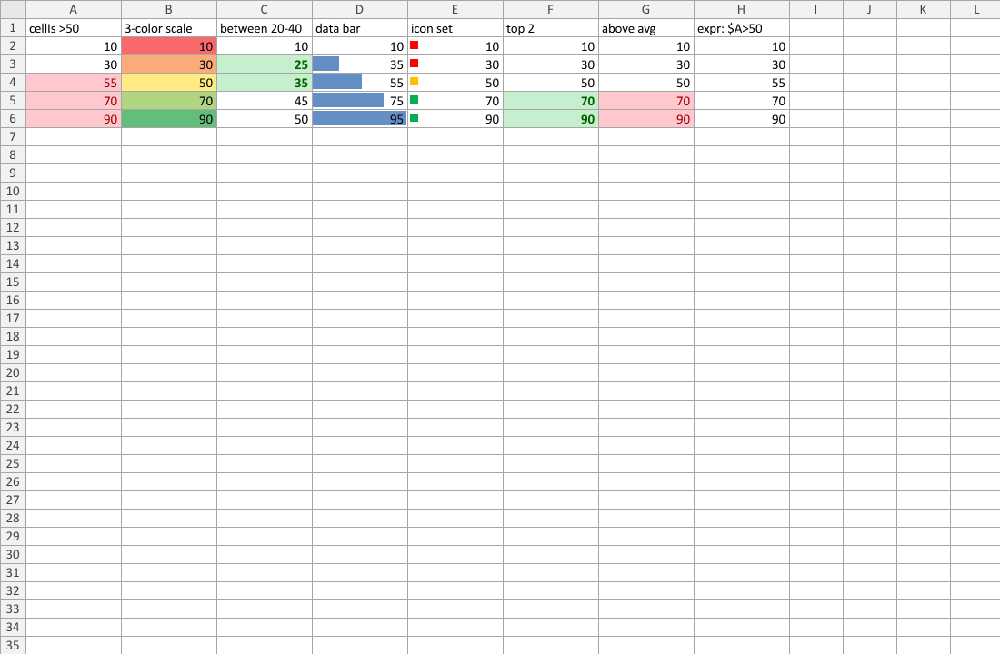
expression rules were parsed into the model yet the runner's CF post-pass had no expression case, so the formula was never evaluated and the dxf never applied.Fix: wire the parser → model → evaluate → overlay path that was missing end-to-end, across two rounds (cellIs + colorScale first, then dataBar + iconSet).
src/Office.Formats/src/XlsxReader.fs:ConditionalFormatRulegainsOperator,Formulas(1 or 2 —betweenneeds two),DxfId,ColorScale(ordered<cfvo>+<color>stops),DataBarColor+DataBarCfvo, andIconSet+IconSetCfvo.parseRulereads them all.- New
Dxfrecord +parseDxfsreads the<dxfs>differential-format table from styles.xml — font color, fill (dxf fills conventionally use<bgColor>), bold/italic.WorkbookgainsDxfs: Dxf array; both loaders parse it.
Model.CellFormatgainsDataBar: (float * string) option(fillFraction, color) andIconSet: (int * int) option(iconIndex, iconCount) so the CF result rides the existing format pipeline.tools/excel-native-runner/Program.fstoModel: after the cell map is built, a CF post-pass walks every<conditionalFormatting>block.cellIsevaluates the operator against the cell's numeric value and overlays the referenced dxf.colorScaleinterpolates the 2- or 3-stop gradient by the cell's position in min..max.dataBarstamps the value's clamped fraction.iconSetresolves each cfvo threshold (percent/percentile onto the range, num literal) and picks the highest threshold the value clears.top10sorts the range and matches the n-th-largest cutoff (ties included; rank can be a count or a percentage).aboveAveragecompares to the range mean, optionally shifted by N·sigma.expressionparses the rule's single<formula>(anchored at the range's top-left), shifts its relative refs onto each target cell viaFormula.shiftExpr, evaluates it against the sheet model with the formula engine, and overlays the dxf wherever the result is truthy.sqrefranges are space-split; rules apply lowest-priority-first so the highest-precedence rule wins.src/Spreadsheet/Paint.fs: Pass 1b draws the data bar — a horizontalFillRectfrom the cell's left edge, inset 2 px vertically, under text. Pass 7 draws the icon-set indicator — a 9 px filled square in a red→amber→green ramp (the renderer has no icon artwork or circle primitive; the square carries the low/mid/high signal). Cell text indents past a 16 px icon gutter when an icon is present, matching Excel.- Latent fix surfaced by this work:
resolveColorElementreturned raw 8-char AARRGGBB, relying on each consumer to strip the alpha. The runner'scellFormatFromStyledid — but the new CF dxf path used the value directly, and the nativeparseHexColorreads an 8-char string as RRGGBBA (alpha last), mangling channels (pink#FFC7CErendered as washed-out yellow).resolveColorElementnow strips the leading alpha at the source so every consumer gets clean 6-char RRGGBB.
- Focused guard: synthetic-condformat.xlsx (8 columns) committed under
tests/test-documents-excel/. All seven rule kinds render the expected overlay / bar / icon. - Regression guard: 59-fixture corpus renders without error. The
resolveColorElementalpha-strip is a no-op for the runner's existing color paths (theirhexColorhelper already stripped 8-char input); poi-49156's indexed fills spot-checked unchanged. - Scope: cellIs / colorScale / dataBar / iconSet / top10 / aboveAverage / expression — all seven
cfRulekinds now evaluate. iconSet uses a colored-square approximation rather than Excel's icon artwork.

=SUM(Scores) → 150, C2 =AVERAGE(Scores) → 30, C3 =MAX(Scores) → 50, C4 =SUM(Scores)*TaxRate → 30 (150 × 0.2), C5 =A1+A2 → 30. The named range resolves through the workbook, the constant name TaxRate resolves too, and the plain uncalculated formula recalculates alongside them.
XlsxReader returned these cells as Formula(text, Empty) — correct — but the native runner never ran a calculation pass, so the cached value stayed Empty and the renderer drew nothing. Defined names were parsed into NamedRange records and then dropped: the Workbook had no storage for them and the formula engine returned #NAME? for every name.Fix: give the formula engine the workbook context it needs, then actually invoke it on load. Landed in two rounds — first global names + on-load recalc, then sheet-scoped names + dependency tracking via an EvalContext refactor.
src/Spreadsheet/Workbook.fs:WorkbookgainsNames, keyed by(SheetId option * name)— scope is the owning sheet for sheet-local names,Nonefor workbook-global.getNametakes the current sheet and tries the sheet-local entry before falling back to the global, so a sheet-local name shadows a global one of the same name.namesOfTriples/namesOfPairsbuild the map.src/Spreadsheet/Formula.fs: a newEvalContextrecord ({ Model; Workbook; Sheet }) threads througheval/evalFunction/flattenArgsin place of the old loose model+workbook pair, carrying the current sheet so names resolve at the right scope.resolveNameExprlooks a name up, parses its refers-to text as a formula, and follows name→name hops with a cycle guard (16-hop cap + visited set).eval'sNameRefcase resolves through it instead of returning#NAME?;flattenArgsresolves a name that stands in for a range soSUM(Scores)sees the whole range, not just its first cell.referencesInExpris now workbook-aware: aNameRefresolves to its target cells so the dependency tracker — and recalc ordering — account for=SUM(MyRange).tools/excel-native-runner/Program.fs: newbuildWorkbookContextassembles aRedBat.Spreadsheet.Workbook— every sheet's model plus theNamesmap fromXlsxReader's parsedNamedRanges, mapping eachlocalSheetIdindex to its positional sheet id for scoping.renderSheetToPathpulls its sheet's model from that context and runsrecalculateAllFormulas(with that sheet as the scope) before painting, so uncalculated formulas — and their cross-sheet refs and named ranges — evaluate.
- Focused guard: synthetic-namedrange.xlsx committed under
tests/test-documents-excel/; the formula test harness gains 11 defined-name assertions (name→cell, case-insensitivity, name in expression, name→range in an aggregate, name→name chain, cycle, unknown name, plus sheet-local shadowing vs. global fallback). - Regression guard: 59-fixture corpus byte-identical — every corpus file ships cached values, so
recalculateAllFormulasonly touches genuinely uncalculated cells and is otherwise a no-op. - Scope: workbook-global and sheet-scoped defined names that refer to ranges, cells, or constants. The incremental
Calc.fsengine was subsequently re-keyed toSheetCell(sheet + cell) and now operates on a wholeWorkbook, so dependency edges — and dirty propagation — cross sheet boundaries: editingSheet1!A1dirties and recomputes aSheet2!B1 = Sheet1!A1 + 1.referencesQualifiedqualifies every ref (and everyNameReftarget) to an absolute(sheet, cell)pair for that graph.

None). Rows 5-7 rendered as a flat solid of the raw fgColor — the pattern density was lost. Row 8 "HEADING" in default Calibri (scheme reference dropped). Row 9 single underline (the val="double" attribute was ignored). Rows 10-12 had no diagonal strokes at all — <diagonal> wasn't parsed.Fix: five independent additions to the style pipeline, batched behind one synthetic fixture.
- Gradient fills —
parseFillnow reads<gradientFill>'s ordered<stop>children. The renderer has no gradient primitive, soblendHexcollapses first + last stop to their 50% midpoint. A 2-stop yellow→red lands on orange — recognizable without a separate render path. - Pattern fills —
patternTypebeyond solid/none/gray125 no longer falls through as a plain fgColor solid. Named grays map to fixed tones; directional patterns (dark/light Horizontal/Vertical/Down/Up/Grid/Trellis) blend fgColor → field color by an empirical density (dark*≈ 0.7,light*≈ 0.3) so a sparse lightUp reads visibly lighter than a dense darkGrid. - Scheme fonts —
parseThemeFontsreads the theme<majorFont>/<minorFont>latin typeface.parseCellXfresolves a font with<scheme val="major|minor"/>and no explicit<name>to that typeface. Both workbook loaders thread the major/minor names down from theme1.xml. - Double underline —
<u val="double"/>(anddoubleAccounting) parsed into a newUnderlineDoublebool carried through RunProps → CellStyle → CellFormat → RunOverride → PaintText. Native + PDF renderers emit a second parallel stroke ~2 px below the first. - Diagonal borders —
<border diagonalUp diagonalDown><diagonal style color/>parsed intoBorderRecord.Diagonal/DiagonalUp/DiagonalDown→CellStyle→CellFormat. Paint.fs emits a top-left→bottom-right GridLine fordiagonalDownand bottom-left→top-right fordiagonalUp; both flags gives the X.
- Focused guard: synthetic-fmt5.xlsx committed under
tests/test-documents-excel/so the corpus runner picks it up. 13 rows, each rendering its labeled feature variant. - Regression guard:
parseFont's tuple widened from 7 to 9 elements (adds underlineDouble + scheme); all call sites updated. Fixtures with no gradient / pattern / scheme / double-underline / diagonal styling render byte-identical — each new path early-returns on the absent element. - Corpus guard: all 58 fixtures (53 + 5 synthetics) render without error.
1,234.56 / (1,234.56) / - for accounting +/-/zero, $ 1,234.56 for currency, 1.23E+08 for scientific, 1/2 + 1/3 for the two fraction codes, 0042 for zero-pad, 12% + 12.30% for percent variants.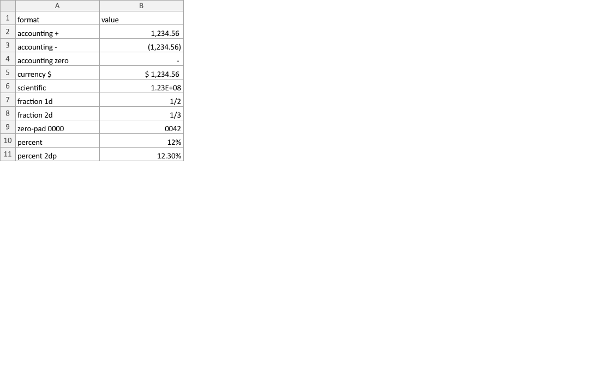

_(* 1,234.56_), -_(* (1,234.56), _(* -??_), _($* 1,234.56_), 1 ?/?, ??/??. Scientific / zero-pad / percent already worked.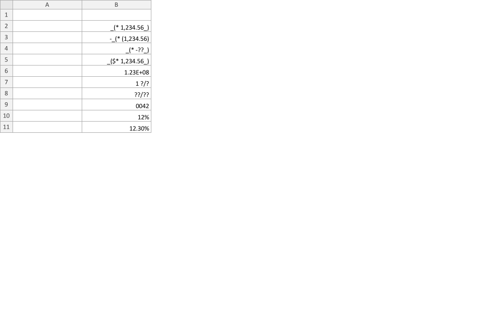
Fix: six independent additions to the format pipeline, tied to one synthetic-fixture pair so each cue regression-guards against the others.
- Hyperlinks (
0263f78, color override in2260837): newHyperlinkrecord in XlsxReader, parsed from<hyperlinks>+ sheet rels (externalr:id→ URL, internallocationdirect). Runner builds a HashSet of hyperlinked cells and forcesTextColor = #0563C1+Underline = trueon each — unconditional override, since Excel's built-in Hyperlink cellStyle takes precedence over the cellXf's resolved theme-1 color. - Comment markers (
4804f0d):CellFormat.HasCommentflag, set by the runner when a cell is insheet.Comments. The native loader now follows the/comments-typed sheet rel toxl/commentsN.xml(the prior code passed[]for comments). Paint.fs Pass 5 emits a 5-px right-isoceles in #C00000 in the top-right corner — same horizontal-strokes trick as the filter-button triangle, since the renderer has no fill-polygon primitive. - List-validation dropdowns (
4804f0d):CellFormat.HasListDropdownflag, set for any cell inside a<dataValidation type="list">range. Paint.fs Pass 6 emits the same 7×4 px triangle the filter button uses, in gray (#666666). Excel only shows the arrow on selection in the live UI; we always show it so the cue carries through to static PNG / PDF snapshots. - Inline strings (
3e6ca61): XlsxReader'scellValuegains aninlineStrcase that pulls text out of<is>/<t>; falls back to<is>even when the cell omits the explicitt="inlineStr"attribute. POI, OpenXmlSdk's row-streaming writer, and most SQL-export-style writers emit inline-string cells. - Number format placeholders (
747378e): three coordinated tweaks informatExcelNumber:stripExcelWidthPlaceholderscollapses Excel's column-width grammar to a .NET-friendly subset:_X→ space,*X→ X,?→#(digit-or-nothing) — all outside quoted literal segments. Without this an accounting cell like_(* #,##0.00_)printed as_(* 1,234.56_)literally.tryFormatFractionhandles?/?and??/??by searching Stern-Brocot-style for the closest reduced fraction with denominator ≤10^digits. Without it Excel's fraction codes printed the raw?s.- When the selected section is non-positive (negatives, zero), format the *absolute* value — Excel's section grammar already encodes the sign visually (
(#,##0.00)for negatives), and .NET was prepending an extra-. Strip[$-XXX]locale tags and bracketed color tags out of the cleaned code so they don't print as literals.
- Focused guard: synthetic-formatting and synthetic-numfmt are committed under
tests/test-documents-excel/so the corpus runner picks them up. Each cell renders the intended cue. - Regression guard: 53-fixture corpus byte-identical for fixtures that didn't use any of these features (no
<hyperlinks>, no comments, no list validation, no inline strings, no accounting / fraction / locale format codes). Number-format codes that already worked — General, simple0.000, dates — flow through their existing paths unchanged. - Corpus guard: all 55 fixtures (53 + 2 synthetics) still render without error.
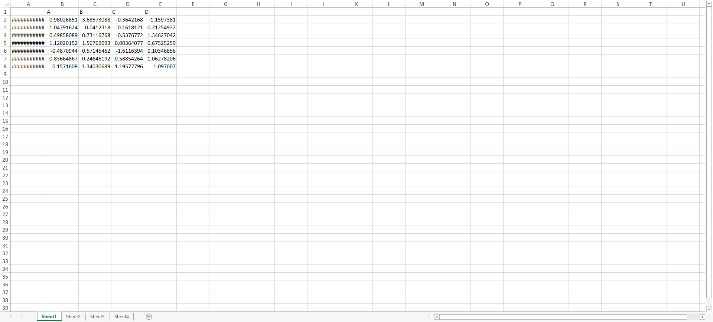
0.98026851 (8 sig digits, 10 chars), col C = 3.68573088 (9 sig digits, 10 chars), col D = -0.3642168, col E = -1.1597381. Cell font Calibri 11, column sized to baseColWidth=10 against the workbook default Calibri 12 (MDW = 8).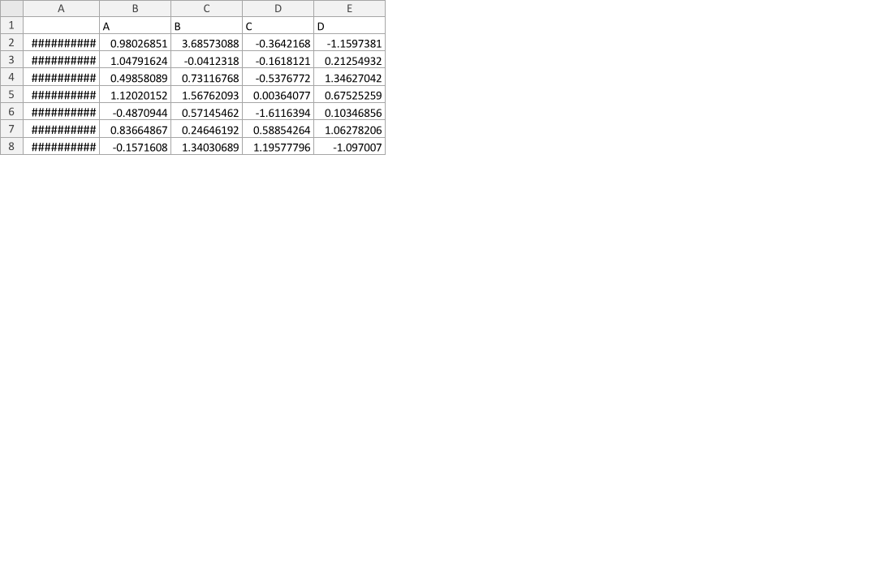
0.98026851 / 3.68573088 / -0.3642168 / -1.1597381. MDW now floors instead of ceils (Calibri 11 = 7 not 8, Calibri 12 = 8 not 9, etc.) and General-format reserves one extra MDW char of right buffer so the trim ladder lands on Excel's effective digit count.
0.9802685138 (10 sig digits, 12 chars), col C = 3.685730879, col D = -0.36421681, etc. The cell font's MDW (Calibri 11 = 7) made maxChars = (cellWidth-8)/7 = 11, enough for G10 to fit even though the column was sized against the default font's MDW (Calibri 12 = 8) at 88 px and Excel would only have used 10 chars worth of digits.Fix: two coordinated changes so the trim aligns with what Excel displays in the same column.
tools/excel-native-runner/Program.fs: switch the per-workbook MDW measurement fromMath.CeilingtoMath.Floor. Microsoft's documented MDW table at 96 DPI floors the measured "0" advance: Calibri 11 = 7 (measured 7.43), Calibri 12 = 8 (measured 8.11), Arial 10 = 7 (measured 7.42), Verdana 10 = 8 (measured 8.48). Ceiling pushed Calibri 11 to 8 — a ~22 px-per-column inflation that propagated through every default-width column. The 7-px floor stays as a safety net for very small fonts.src/Spreadsheet/Paint.fsgeneralNumberDisplay: reserve one extramdwPx fontPtchar of right buffer on top of the existing 4 px-per-side text inset. Also widen the candidate Gn ladder from[G10; G8; G6; …]to[G11; G10; G9; G8; G7; …]so the trim can land on 9 or 7 sig digits when Excel does — without this the trim jumps straight from G10 to G8 and skips Excel's intermediate values.
- Focused guard: pandas-test1 rows 2-8 across cols B-E now match the Excel reference within rounding (full audit reproduced 8/8 cells).
- Regression guard: poi-47813 (Verdana 10 baseline, MDW already floored to 8), pandas-test_decimal (TableStyleMedium2, explicit number format), pandas-test_types (mixed types, explicit formats), and every fixture whose values use a number format other than General all unchanged. Cells whose values have ≤ 8 sig digits to begin with (most pandas exports) get the same render as before.
- Corpus guard: all 53 fixtures still render without error.

artifacts/excel/ for this fixture (pandas test asset). Verification is structural: <pane xSplit="1" ySplit="3"/> in the sheetView puts the split between cols A/B and rows 3/4, and the darker divider line in the "After" panel lands at exactly those edges.
buildFreezeDividerItems emits one horizontal + one vertical GridLine at the freeze split (HeaderHeight/RowHeaderWidth offsets baked in so the line lands flush with cellRect coordinates).
Fix: end-to-end frozen-pane wiring covering parsing, static render, and interactive scroll/hit-test.
src/Office.Formats/src/XlsxReader.fs: newFrozenPanerecord on Worksheet, populated byfrozenPane sheetreadingsheetView/pane. Only triggers onstate="frozen"orstate="frozenSplit"— plain "split" puts a draggable bar in instead and we'd render it wrong.src/Spreadsheet/Model.fs:SpreadsheetModelgainsFrozenRows/FrozenCols(zero = no freeze).src/Spreadsheet/Layout.fs:ViewportZonegainsFrozenRowsZone,FrozenColsZone,FrozenCornerZone;toViewportRectdrops the pinned axis for each.zoneForCellmaps (row, col) to a zone.viewportClipFor model viewport zonederives band-specific clip rects (BodyZone clips past the split; the frozen zones clip the bands themselves).src/Spreadsheet/Paint.fs:buildCellPaintItemsnow returns(ViewportZone * PaintItem) listso each cell's items carry its zone.buildPaintItems(PNG/PDF path) ignores the tag — at ScrollX/Y=0 every zone paints at absolute position.buildFreezeDividerItemsemits the divider strokes.buildViewportPaintItemsthreads the zone into eachViewportPaintItem.src/Spreadsheet/Spreadsheet.fsrenderCell: for cells in a frozen band, addscrollTop/scrollLeftto absolutetop/leftso the browser's native scroll cancels out and the cell stays visually pinned. Frozen cells get a higherz-indexso body cells slide under them.hitTesttests each cell against its zone's own translation — without this, clicks on a frozen band would hit the body cell underneath at the current scroll position.
- Focused guard: pandas-df_header_oob shows the divider at (col A | col B) and (row 3 | row 4) split. poi-47813 / pandas-df_empty / df_equals / df_mangle show the ySplit=1 horizontal-only divider below row 1.
- Regression guard: fixtures with no frozen pane render byte-identical to before —
buildFreezeDividerItemsearly-returns when FrozenRows = FrozenCols = 0.buildCellPaintItems's static path strips zones, so non-zoned callers see the same item sequence as before. - Corpus guard: all 53 fixtures still render without error.
indexed=, theme= + tint= color attributes (cells, fonts, borders)

#C0C0C0 (light gray), index 41 = #CCFFFF (cyan), index 45 = #FF99CC (pink), 43 = #FFFF99. Compare to the OOXML transitional spec's IndexedColors table.

<fgColor indexed="N"/> hit Xml.attr "rgb" in parseFill, returned None, so all fill colors dropped to default white. The structural borders are still visible because parseBorderSide reads style= which doesn't depend on color resolution.Fix: add a generalized color element resolver and route every color path (font, fill, border) through it.
src/Office.Formats/src/XlsxReader.fs:resolveColorElement themeColors nodetriesrgb→theme(+ optionaltint) →indexedin that order, returning the first hit as a 6-char hex.parseThemeColorsreads all 12 slots of the theme<a:clrScheme>in XLSXtheme="N"integer order — note that OOXML swapsdk1/lt1(anddk2/lt2) between the theme XML element order and the theme-N value space. Without all 12,theme="0"(background) andtheme="1"(text) would silently fall back to defaults.parseThemeAccentsstays as a 6-entry array for the existing TableStyleMedium# overlay code that indexes accent1..accent6.indexedPaletteColor iencodes Excel 8 / BIFF8's 64-slot legacy palette as a static table, plus indices 64 (system fg → black) and 65 (system bg → white).applyColorTint rgb tintimplements the OOXML formula: convert RGB → HLS, adjust L byL * (1 + tint)when tint < 0 elseL * (1 - tint) + tint, convert back. Tint = -0.5 darkens by ~half, tint = +0.5 lightens.parseFont,parseFill,parseBorderSide,parseBorder,parseStylesall takethemeColors: string arraythreaded down from the workbook loader.parseFilladditionally treatspatternType="none"andpatternType="gray125"(openpyxl's no-fill sentinel) as explicit None, and falls back tobgColorwhenfgColoris absent — POI-written workbooks sometimes only setbgColorfor the solid case.
- Workbook loader (
parseWorkbookNativeand the Promise-basedparseWorkbook) readsxl/theme/theme1.xmlfirst, derivesthemeColorswith Office 2013 defaults as fallback, then passes it intoparseStylesso every color element has a resolution context.
- Focused guard: poi-49156 banded rows now show the 4-color form palette (cyan/pink/light-gray on a white base). poi-51710 column-A and row-2 darker gray now matches the Excel reference's header band rather than blending into the body.
- Regression guard: every fixture that was already using
rgb=colors keeps the exact same hex value (resolveColorElement triesrgbfirst); pandas* fixtures, phpsp-26template, the table fixtures all produce byte-identical PNGs. - Corpus guard: all 53 fixtures still render without error.

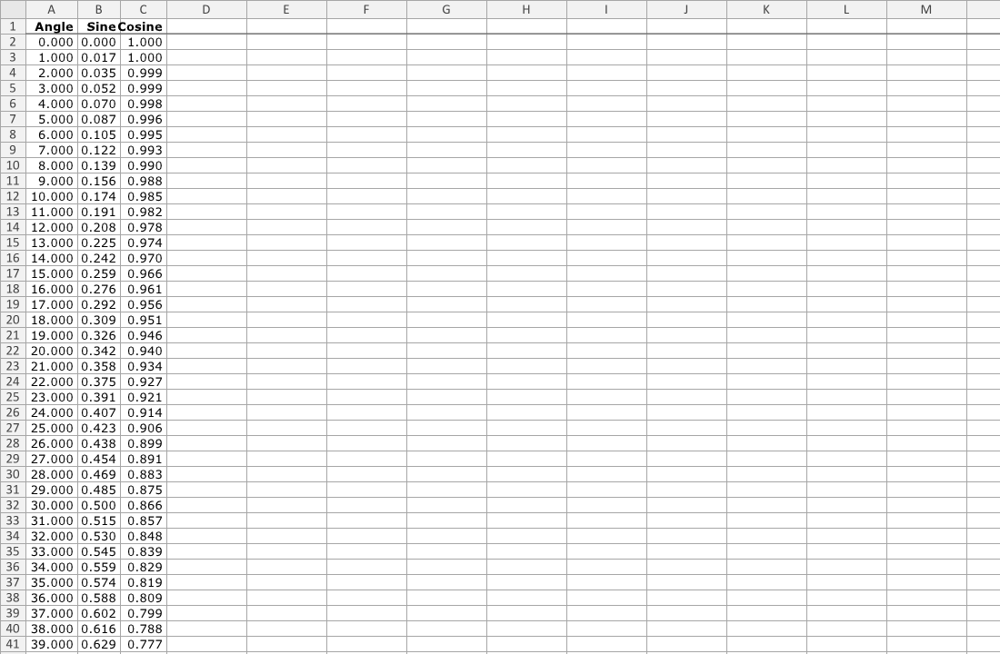
tools/excel-native-runner loads the workbook's default font via SpreadsheetGrid.rendererFontFor and measures Renderer.Text.measureWidth font pxSize "0", then ceils. For Verdana 10 (winAscent-anchored) that lands at 8 px. Combined with the new Verdana faces in the font cache, col A now fits "47.000" cleanly.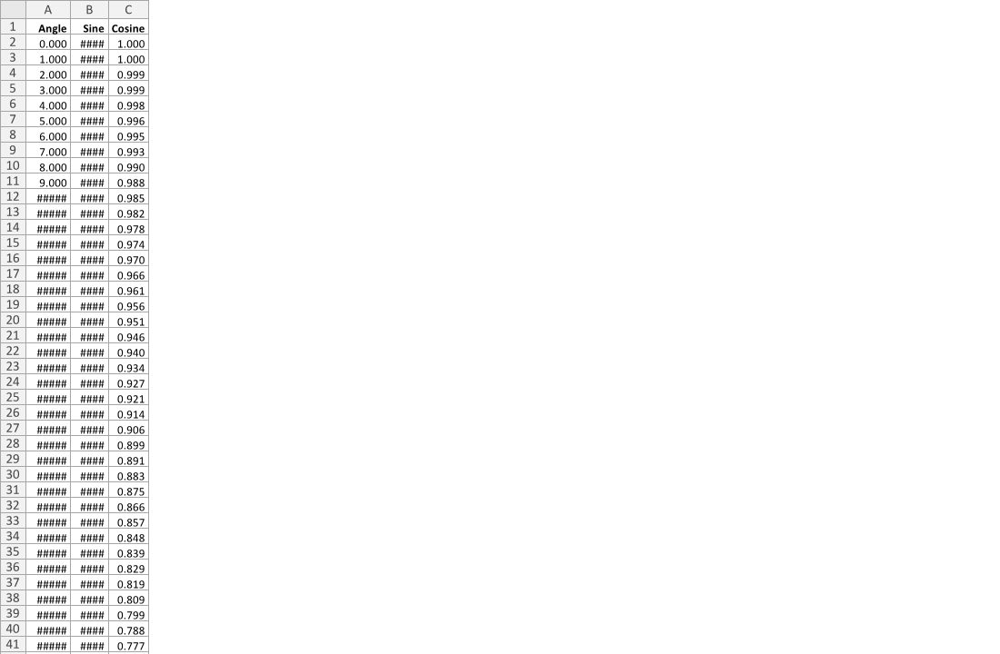
round(10 × 7/11) = 6 clamped to floor 7 — close to Calibri's '0' but not Verdana's. Col A clamped to 50 px instead of 57 px; numbers ≥ 10 overflow → #####. Verdana itself also wasn't recognized, so text fell back to Calibri (giving the cells a thinner look than Excel).Fix: three coordinated changes so the renderer/runner can measure with the actual font.
tools/word-parity/fetch-windows-fonts.sh: addverdana.ttf,verdanab.ttf,verdanai.ttf,verdanaz.ttfto the fetch set. Pull the same files Excel renders with.spreadsheet-native/SpreadsheetGrid.fs:familyKeyrecognizes names starting with "verdana";fontFilesreturns the matching variant chain. ExposerendererFontForas a public wrapper so the runner can resolve fonts through the same family map + cache as the renderer.tools/excel-native-runner/Program.fs: intoModel, load the workbook's default font (Styles.[0].FontName) viarendererFontFor, then derive MDW fromceil (measureWidth font pxSize "0")floored at 7. Falls back to the prior linear estimate when the font load throws.
- Focused guard: poi-47813 col A width 50 → 57 px (Excel: 57). All 47 angle values render cleanly. Col B similar (Sine column now fits 0.NNN values).
- Regression guard: every Calibri/Arial fixture still resolves MDW = 7 (or 8 at size 12+) via the same measurement, matching Excel's per-font MDW table. pandas-test1, pandas-testmultiindex etc. produce pixel-identical PNGs.
- Corpus guard: all 53 fixtures still render without error.
vertical="top" → bottom on default-height rows (Excel quirk)

y = 25 in a cell spanning y = 20..39 — 5 px below cell top, 4 px above bottom. Excel ignores the vertical="top" hint because the 19-px row is barely taller than the Calibri 11 line height (winLineHeight ≈ 17.9 px).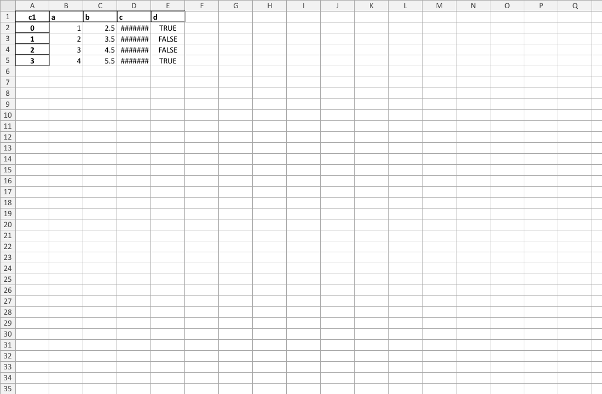
toRendererCommands computes the cell's vertical slack (cell.Height − winLineHeight × lineCount); when vAlign is top AND slack is less than half a line height, collapse to bottom. Row 1 cap now lands at y = 26 (Excel's y = 25 within 1 px floor diff). Tall wrap-text cells (phpsp-26template row 4/5) still respect the top hint because they have plenty of slack.
y = 21 — 1 px below cell top because vAlign=top placed the em-top at cell.top. Visually obvious as header text glued against the top border, ~4 px higher than Excel.Fix: mirror Excel's "default-height rows ignore the top hint" behavior at the renderer.
spreadsheet-native/SpreadsheetGrid.fsintoRendererCommands: computeslack = text.Rect.Height − blockHeightwhereblockHeight = winLineHeight × LineCount. IfVerticalAlign = VAlignTop && slack < winLineHeight × 0.5, fall back toVAlignBottomfor the block positioning. Everything else (top-anchored multi-line wrap, explicit center/middle, default General) flows through the same vAlign DU as before.- Threshold tuning: 0.5 × line height is the visual "alignment matters" cutoff. Below that, top/bottom converge to within 1 px of each other anyway; above it, Excel respects the hint and so do we (verified with phpsp-26template's tall wrap-text cells).
- Focused guard: pandas-testmultiindex row 1 "c1"/"a"/"b"/"c"/"d" cap now lands at the same y-position as Excel (1 px floor diff). pandas-test_index_name_pre17, multiindex_no_index_names, and every other pandas fixture see the same correction on their header rows.
- Regression guard: cells with
vAlign = bottomor no explicit alignment go through the existing path unchanged. Tall rows (e.g. phpsp-26template row 4 height = 36 px) keep top-anchored placement when the hint is set. - Corpus guard: all 53 fixtures still render without error.

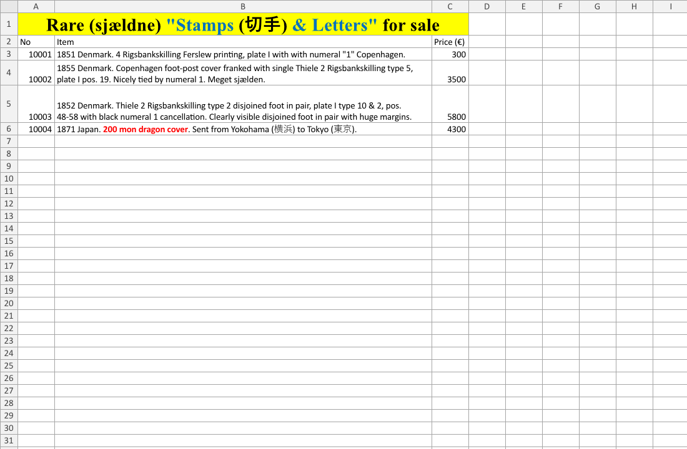
SpreadsheetGrid.toRendererCommands walks the text codepoint-by-codepoint, asks the primary font (via Renderer.Text.hasGlyph) whether it covers each one, and switches to the first fallback that does. The native measurer goes through the same primary-then-fallback walk via segmentByFontCoverage so a Times run containing kanji doesn't return a too-small width and let the next rich-text run overlap the trailing space. Baseline stays anchored to the primary font's winAscent so mixed-script lines don't jitter vertically.
.notdef) in Calibri's cmap, which the shaper rendered as a tofu box. Row 1's "(□□)" in place of "(切手)"; row 6's "(□□)" for both 横浜 and 東京.Fix: fetch the same fonts Excel/GDI uses for fallback, plus three small renderer changes so they load and split correctly.
tools/word-parity/fetch-windows-fonts.sh: pullYuGothR.ttc/YuGothB.ttc(Japanese),msyh.ttc/msyhbd.ttc(Simplified Chinese),msjh.ttc/msjhbd.ttc(Traditional),malgun.ttf/malgunbd.ttf(Korean), plusmsgothic.ttcas the legacy Japanese fallback. Skip-with-warning when a font is missing on the VM image instead of aborting.shaper/Shaper.fs:parseFontnow handles TTC (TrueType Collection) files by detecting the"ttcf"prefix and reading font 0's offset from byte 12. Previously it blindly read byte 4 as the table count, which crashed on every.ttcwe wanted to load. SplitparseTableDirectoryintoparseTableDirectoryAt(data, sfntStart)so the TTC branch can re-anchor.renderer/Text.fs:hasGlyph font codepoint— one-line wrapper aroundCmapLookup.lookup ≠ 0. Used by font-fallback logic to decide whether to keep the primary font or switch.spreadsheet-native/SpreadsheetGrid.fs:cjkFallbackChain boldreturns the GDI-style chain (Yu Gothic → MS Gothic → YaHei → JhengHei → Malgun for regular; bold variants for bold cells).fallbackFontFor codepoint boldpicks the first chain font whose cmap covers the codepoint, with a per-filename cache so a 13 MB Yu Gothic TTC loads at most once.toRendererCommandswalks the text codepoint-by-codepoint (folding surrogate pairs), partitions into contiguous segments by which font wins, measures each segment with its own font, and emits oneCmd.DrawGlyphsper segment. Baseline stays anchored to the PRIMARY font'swinAscent— mixing Yu Gothic's larger ascent in would shift the baseline ~3 px vs Excel.segmentByFontCoveragelifts the same primary→fallback walk someasureText(used by Paint.fs's rich-text cursor) sums per-segment widths instead of probing just the primary font. Without this, a Times rich-text run containing kanji measures as ~Latin-chars-only width, and the next run's start gets parked on top of the trailing space — visible in row 1 as(切手)& Lettersinstead of(切手) & Letters.
- Focused guard: phpsp-26template's 切手, 横浜, 東京 all render as the correct glyphs, and the space between run 3 (
" (切手) "in black) and run 4 ("& Letters"in blue) survives. - Regression guard: cells whose text is fully Latin take the single-segment path with the primary font — same Cmd.DrawGlyphs output and same measurer width as before. Per-run rich text (previous row) still works because the segmentation runs inside each per-run DrawText.
- Corpus guard: all 53 fixtures still render without error. Font load is cached, so repeated CJK cells don't re-pay the TTC parse.
- Path guard: native PNG and PDF emitter. The PDF path picked up the same fallback chain (with subset-embed to keep file size sane) in a later commit; Fable web canvas relies on the browser's own font-linking and was never broken to begin with.
<r> elements
<r> carries its own <rPr> (rFont, sz, b, color rgb).Workbook.SharedStringRuns carries parsed run lists parallel to the existing SharedStrings text array. SpreadsheetModel.RichRuns indexes the runs by cell address (sparse — only cells with >1 run). Paint.fs pass 3, on a one-line cell with rich runs, emits one DrawText per run positioned along x using the same Viewport.Measurer the wrap path uses. The blue Stamps span and the bold-red "200 mon dragon cover" now match Excel. (CJK glyphs render as boxes — separate font-fallback gap.)
<si> went through List.choose Xml.text on all descendant <t> elements, returning a single plain-text string. The cell's base format (font, color, bold) applied uniformly — so the yellow row 1 looked monochrome black, and row 6's "200 mon dragon cover" lost both its bold and red.Fix: parse runs at the SST layer, propagate them through to the renderer.
src/Office.Formats/src/XlsxReader.fs: addRunProps { Bold; Italic; Color; FontName; FontSize }andSharedStringEntry { Text; Runs }.sharedStringswalks<si>children: when an<r>is present, parse its<rPr>(b,i,color rgb,rFont,sz) intoRunPropsand yield(text, props).WorkbookgainsSharedStringRuns: (string * RunProps) list arrayparallel toSharedStrings: string array(same length, empty list for plain entries).src/Spreadsheet/Model.fs:RunOverriderecord (all-optional mirror ofRunProps).SpreadsheetModelgainsRichRuns: Map<CellAddress, (string * RunOverride) list>— sparse, only populated for cells whose SST entry has more than one run.tools/excel-native-runner/Program.fs:cellRichRunsmapsRunProps→RunOverride(color: ARGB →#RRGGBB, bool fields drop to None when false so the cell's base format wins).toModelaccumulates a per-address map and stashes it inmodel.RichRuns.src/Spreadsheet/Paint.fspass 3: on a one-line cell with rich runs and a measurer available, measure each run with its effective(fontName, bold, italic, size), compute total width for alignment, and emit oneDrawTextper run at the running x cursor. Each run carries its own per-run font/color overrides, withAlign = AlignLeft(positions are pre-computed).
- Focused guard: phpsp-26template row 1 yellow header now has the blue "Stamps (…) & Letters" segment. Row 6 "200 mon dragon cover" renders bold red on a black-text run.
- Regression guard: cells with single-run SST entries (the vast majority) go through the plain-text path — same DrawText output as before.
- Known limitation: multi-line wrap with per-run formatting still falls back to plain rendering. Adding it requires chunking each wrapped line back to its source runs.
- Corpus guard: all 53 fixtures still render without error.
charCount × mdwPx
Viewport gains Measurer: TextMeasurer option. Native runner sets it to a closure that runs Renderer.Text.measureWidth against the real loaded font for the cell's (fontName, bold, italic) triple. Paint.wrapLines consults the measurer for both word-fit and char-fit decisions when present. Rows 4 and 5 now wrap at the same word boundaries Excel does.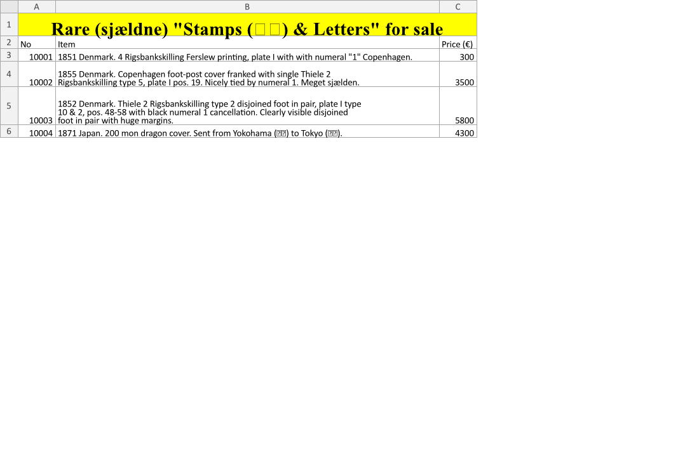
Fix: add an optional real-font measurer to the layout context and consult it in wrapLines.
src/Spreadsheet/Layout.fs: newTextMeasurer = string → float → string option → bool → bool → floatalias plusMeasurer: TextMeasurer optiononViewport.defaultViewportsets it None.spreadsheet-native/SpreadsheetGrid.fs: definemeasureTextasrendererFont fontName bold italic |> Renderer.Text.measureWidth pxSizeand passSome measureTextinviewportOf. Same renderer the PNG path uses, so wrap and draw stay in sync.src/Spreadsheet/Paint.fs:wrapLinestakesmeasure: (string → float) option.fitsuses the measurer when present, falls back tocharCount ≤ mdwPx-budgetotherwise. Char-by-char break for oversized words also routes throughfitsso the worst case (a single long word) still respects real metrics.- Other call sites (
src/Spreadsheet/Spreadsheet.fsFable canvas;src/Spreadsheet.Pdf/Pdf.fsPDF emitter): setMeasurer = None. They'll wrap with mdwPx until a measurer is wired there; not a regression since they used the same heuristic before.
- Focused guard: phpsp-26template row 4/5 wrap points now match the Excel reference at word level.
- Regression guard: cells without WrapText (the vast majority) are unaffected. Cells with WrapText in fonts where mdwPx and real-width happen to align (e.g. monospaced) still wrap identically.
- Corpus guard: all 53 fixtures still render without error.
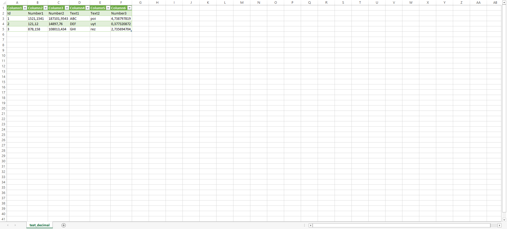

TableDefinition.AutoFilter stores the parsed range. tableOverrideFor flags header cells in the range with FilterButton = true. buildCellPaintItems pass 4 emits five horizontal GridLine commands forming a centered 7×4 triangle, color = format.TextColor (white on green). Visible on Column1..Column6 — same shape, position, and color as Excel.Fix: add <autoFilter> parsing + a filter-button flag on cell format, then draw the triangle.
src/Office.Formats/src/XlsxReader.fs: addAutoFilter: (int * int) optiontoTableDefinition.parseTablereadssElem "autoFilter" doc, parses therefattribute through the existingparseRange, and stores just the column span (rows are implicit — the header is always atStartRow).src/Spreadsheet/Model.fs:CellFormatgainsFilterButton: bool. Default false ondefaultFormat; all other CellFormat constructors (XlsxImporter.convertCellFormat, native runner'scellFormatFromStyle) initialize it to false.tools/excel-native-runner/Program.fs:TableOverlaygainsFilterButton: bool.tableOverrideForsets it true for header cells whose column falls int.AutoFilter. The format-merge step ORs the overlay flag intobaseFormat.FilterButton.src/Spreadsheet/Paint.fs: new pass 4 inbuildCellPaintItems. For each cell withformat.FilterButton: compute a 16-px-wide right-edge button area; emit 4 horizontalGridLinestrokes forming a centered downward triangle. Stroke color isformat.TextColorso the white-on-green triangle matches the header text. No newPaintItemcase needed.
- Focused guard: pandas-test_decimal now shows six ▼ triangles, one per header cell in A1:F1.
- Regression guard: tables without
<autoFilter>(e.g.HeaderRowCount = 0tables, or non-pandas writers) getFilterButton = falseon every cell — render unchanged. - Corpus guard: all 53 fixtures still render without error.
- Path guard: native PNG only. PDF emitter ignores
FilterButton(no draw command emitted for it there yet); Fable web canvas does the same. PDF/web parity is a follow-up.
y = 48..57 with cell bottom at y = 62 — 5 px of descender room. Excel anchors the baseline using winAscent below the em-top of the line block, so baseline = cellBottom − winDescent_px = 62 − 4.30 = 57.7.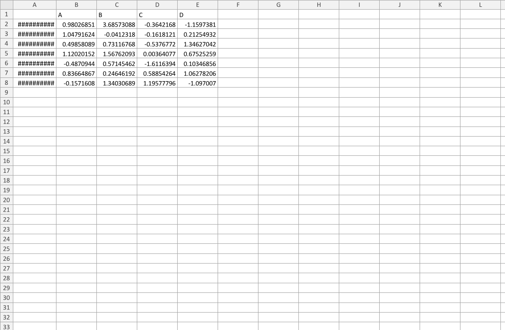
y = 49..58 (1 px floor diff vs Excel). toRendererCommands computes baseline = blockTopY + i × winLineHeight + winAscent with blockTopY anchored per VerticalAlign (top = cell.top, bottom = cell.bottom − blockHeight). For Calibri 12 (winAscent = 1950, winDescent = 550, em = 2048) and a 20-px row, this puts the descender flush with the cell floor.y = 52..60 — only 2 px of descender room. The old formula was baseline = rect.Y + (rect.Height + pxSize)/2 − 2.0, equivalent to "center a pxSize-tall block in the rect, then nudge up 2 px." It under-counted descender room by ~3 px for Calibri 12 because the magic 2 wasn't actually winDescent_px.Fix: three-repo refactor that replaces the heuristic with real font metrics end-to-end.
renderer/Text.fs: addwinAscent/winDescent/winLineHeighthelpers next to the existing hhea-basedascender/descender/lineHeight. They read OS/2usWinAscent/usWinDescent(the Windows GDI box-layout metrics — larger than hhea because they include diacritical headroom). IfOS/2.fsSelectionbit 7 (USE_TYPO_METRICS) is set, honor the font's preference for typo metrics instead. Falls back to hhea when OS/2 is absent.pdf/FsPdf.fs: parseOS/2 usWinAscent(offset +74) andusWinDescent(offset +76) intoTrueTypeFontnext to the existing hhea fields. PDF can now do the same baseline math the PNG renderer does.src/Spreadsheet/Paint.fs:PaintTextnow carriesVerticalAlign(DU: top / middle / bottom),LineIndex,LineCount.buildCellPaintItemsemits one DrawText per wrapped line with the full cell rect, no synthetic per-line Y packing. Excel "General" (no explicit alignment) →VAlignBottom.spreadsheet-native/SpreadsheetGrid.fs+src/Spreadsheet.Pdf/Pdf.fs:baseline = blockTopY + lineIndex × winLineHeight + winAscent, withblockTopYset per vAlign so bottom = "em-bottom of last line at cell.bottom", top = "em-top of first line at cell.top", middle = block centered.src/Spreadsheet/Spreadsheet.fs(Fable web canvas): switchtextBaselinefrom'middle'to'alphabetic'; pass the explicit baseline. Use Calibri's approximate em-relative ratios (winAscent 0.952, winLineHeight 1.221) since browser canvas doesn't expose font metrics portably.
- Focused guard: pandas-test1 B2 baseline within 1 px floor diff vs Excel (was ~3 px too low pre-fix). pandas-testmultiindex B2 "1" digit at
y = 46..55vs Excely = 46..54(1 px). phpsp-26template multi-line cells stride correctly withwinLineHeight. - Regression guard: all 53 corpus fixtures still render without error. Headers (column/row strip) now explicitly request
VAlignMiddleand render unchanged. - Policy: default to
winAscent/winDescentfor Office parity. If the font setsfsSelection.USE_TYPO_METRICS(e.g. Inter, Roboto — fonts that want cross-platform consistency), honor that instead. Falls back to hhea only when OS/2 is missing entirely.
y = 6..15 (10 px cap height — matches Calibri 11 pt × 96/72 dpi). Cell B2 "0.98026851" runs x = 133..207 (75 px wide × 10 px tall).toRendererCommands now multiplies text.FontSize by 96/72 before calling Renderer.Text.layout. Column-header "B" glyph occupies y = 6..15, cell B2 number runs x = 136..205 (70 px wide × 11 px tall). All glyphs sit at the same source-pixel positions as Excel within ±1 px, so the cell-by-cell overlay in this tracker actually shows like-for-like text.FontSize reached the renderer as-is, so "11" got interpreted as 11 px of em-square instead of 11 pt = 14.67 px. Column-header "B" glyph was only 8 px tall (vs Excel's 10), cell B2 number ran 52 px × 7 px (vs Excel's 75 × 10). Every glyph rendered ~75% the size Excel showed — fine in isolation, useless for overlay comparison.Fix: in spreadsheet-native/SpreadsheetGrid.fs's toRendererCommands, compute pxSize = text.FontSize * 96.0 / 72.0 and feed that to both Renderer.Text.layout / measureWidth and the baseline math. Row/column heights were already pt→px-converted (h * 96/72) inside tools/excel-native-runner; this brings text into the same coordinate system.
Companion change to the font lookup: tools/excel-native-runner's findFont now also checks ../office/artifacts/fonts/windows/ (matching SpreadsheetGrid.fontDirs) and stderr-warns if calibri.ttf can't be found. The runner's Composit.Ui.Layout.initFont path was previously silent on miss → fell back to NotoSans for any chrome that went through the Composit font path. Cell rendering already used Calibri via SpreadsheetGrid.loadVariant; this just makes the runner-level font init consistent.
- Focused guard: pandas-test1 column-header glyph height 8 → 10 px; cell B2 number width 52 → 70 px (vs Excel 75 px — remaining 5 px is digit-spacing hinting jitter, not font size).
- Regression guard: all 53 corpus fixtures still render without error after pt→px. Native-runner unit conversion (pt → px) now applies consistently to row heights, column widths, and text.
- Path guard: native PNG only. The Fable web app already renders fontSize via CSS
font-size: …pt, which the browser converts automatically — no change needed there.
defaultColWidth="8.85546875" + Calibri 11 → 62 px per column (column boundaries at source x = 25, 87, 149, 211, 273, …). Column-header strip is 20 px tall; row 1 starts at y = 20.charsToPixels reads the workbook's default FontSize (workbook.Styles.[0]) and derives MDW = round(size × 7/11) — 7 for size 11, 8 for size 12. Pandas-testmultiindex columns now render at 62 px (boundaries at source x = 27, 89, 151, 213, 275, …) and row 1 starts at y = 20. With the parity HTML and Excel screenshot sharing the same per-row --s scale, cells now occupy the same on-page rectangle in both columns.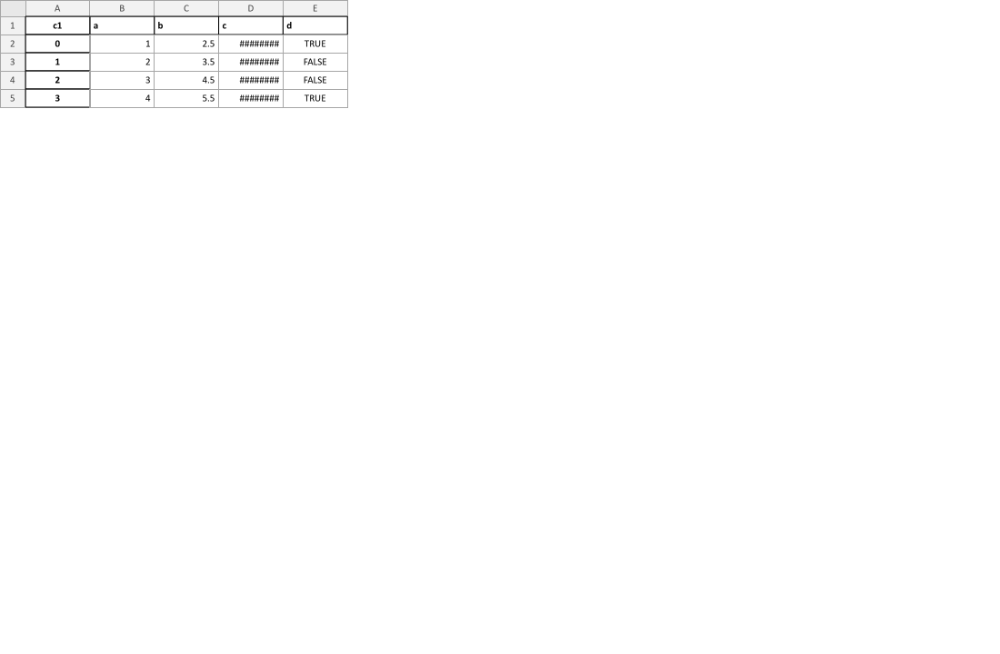
chars * 8.0, so size-11 columns rendered at 8.85546875 × 8 ≈ 71 px (boundaries at source x = 27, 98, 169, 240, 311, …) — ~14% wider than Excel. The header strip was 18 px, so row 1 started at y = 18 while Excel's started at y = 20; the 2-px drift compounded with the column drift to misalign every cell when the two PNGs were overlaid in the parity tracker.Fix: two coordinated changes that together make Excel screenshots and our native render share the same source-pixel grid.
tools/excel-native-runner/Program.fs: readworkbook.Styles.[0].FontSize(defaults to 11) and derivemdw = max 1.0 (round(size × 7.0 / 11.0)).charsToPixelsuses this per-workbook MDW instead of a literal 8.0. Calibri 11 sheets get 7 px/char, Calibri 12 sheets stay at 8 px/char.spreadsheet-native/SpreadsheetGrid.fs: bumpheaderHeightfrom 18 → 20 px to match the Excel pane capture (measured with a horizontal-line scan: the first row of dark pixels that spans the full pane is aty = 20).
- Focused guard:
pandas-testmultiindex.xlsxdefault columns drop from 71 px to 62 px; A1 anchor moves from(28, 18)to(28, 20), identical to Excel. - Regression guard:
pandas-test1.xlsx(Calibri 12 → MDW 8) keeps its 88-px default columns and 95-px column A — no change vs the previouschars * 8behavior. - Corpus guard: all 53 fixtures still render without error after the MDW change.
<border> from cellXf borderId
borderId=1 → <border> with <top/><bottom/><left/><right style="thin"/>).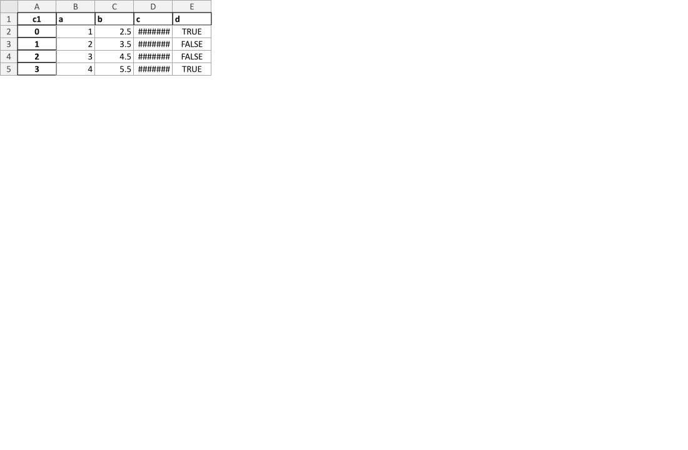
parseBorder reads each side's style + <color>; parseCellXf indexes into the borders array via borderId; cellFormatFromStyle maps to BorderStyle option; buildCellPaintItems emits GridLine commands per side at a stroke width chosen by the OOXML style (thin → 1.0 px, medium → 1.5 px, thick → 2.5 px).parseStyles ignored the <borders> block entirely. The cell paint pipeline only drew the default #a6a6a6 gridline, so the rendered table looked faint compared to Excel's strong cell grid.Fix: end-to-end border plumbing. src/Office.Formats/src/XlsxReader.fs: add CellBorderSide + BorderRecord, parse the <borders> block, extend CellStyle with BorderTop/BorderBottom/BorderLeft/BorderRight, and have parseCellXf look up the cellXf's borderId. tools/excel-native-runner/Program.fs: forward the four sides through cellFormatFromStyle. src/Spreadsheet/Paint.fs: per-cell GridLine emits for whichever sides are set, with borderStrokeWidth mapping OOXML style names to stroke widths.
- Focused guard:
pandas-testmultiindex.xlsxnow renders the dark cell grid that Excel shows. - Regression guard: cells with
borderId=0(no border) still get just the default#a6a6a6gridline. - Corpus guard: all 53 fixtures still render without error.
<col min..max> width across the full range
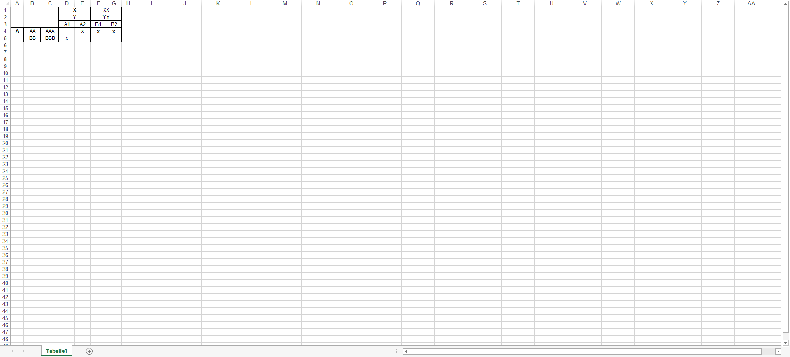
<col min="4" max="7" width="5.41"/> entry; the table stays compact (~340 px total).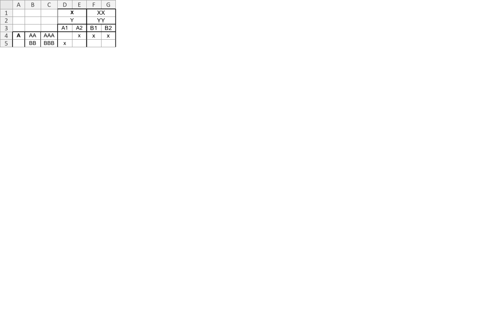
columnInfo records both min and max; the runner fans the same width into every column in the range. Cols D–G now share the 43-px width and the table footprint matches Excel.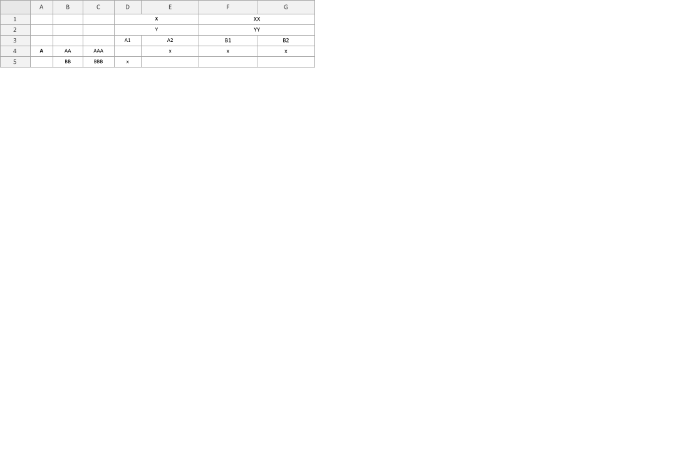
min) got the 5.41-char width; cols E / F / G fell back to the 8.43-char sheet default (≈ 67 px each), so the right-hand block widened by ~70 px and broke the spacing of the merged headers above.Fix: add MaxIndex to Xlsx.ColumnInfo in src/Office.Formats/src/XlsxReader.fs, parse the max attribute (default to min), and in tools/excel-native-runner/Program.fs emit one ColumnWidths entry per column in min..max instead of just one for the first.
- Focused guard:
pandas-multiindex_no_index_names.xlsxfootprint shrinks from ~480 px wide to ~340 px (matching Excel). - Regression guard: explicit single-column entries (
<col min="1" max="1"/>) still set just one column's width becausemin == maxthere. - Corpus guard: all 53 fixtures still render without error.
0.000, 0.017, 0.035, …) per the cellXf's numFmt 164 = "0.000".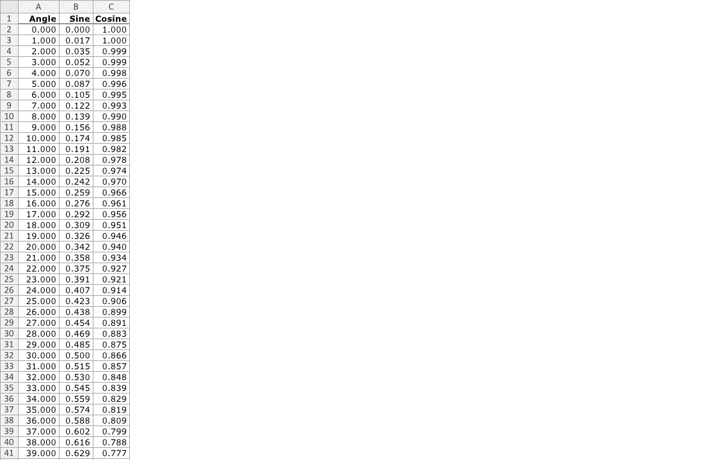
formatExcelNumber helper that hands the (positive section of the) format string directly to Double.ToString, which natively understands 0.000, #,##0.00, 0%, scientific, etc. Sine/Cosine values match Excel exactly to 3 decimals.
cellDisplayText for non-date format codes called Model.formatNumber, which only recognised the legacy currency/percentage/decimal2/number/date tags and fell through to string n for everything else. 0.000 didn't match any tag → raw G representation → didn't fit the narrow column → fitOrOverflow emitted #####.Fix: in src/Spreadsheet/Paint.fs, split cellDisplayText's number branch into three: explicit named formats (currency/percentage/…) still go through Model.formatNumber; General goes through generalNumberDisplay; everything else routes to formatExcelNumber, which strips the section separator, converts \x escapes to 'x' literals, and passes the format directly to Double.ToString with a G fallback if .NET rejects it.
- Focused guard:
poi-47813.xlsxSine/Cosine cells match Excel to 3 decimal places (was#####in every cell). - Regression guard:
pandas-test1.xlsxcolumn A (numFmtId 22 → date),pandas-test_types.xlsxDateCol (numFmtId 164 → m/d/yyyy), andphpsp-32chartreadwrite.xlsxcached-formula numbers all still render correctly — the new branch only kicks in for non-date, non-named format codes. - Corpus guard: all 53 fixtures still render without error.
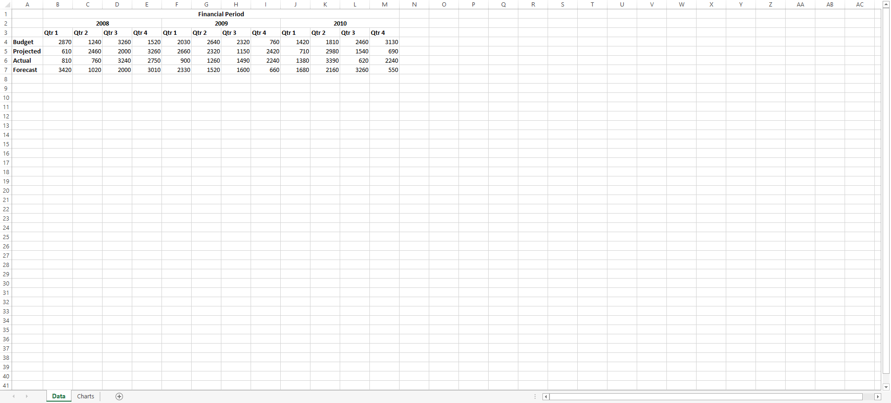
RANDBETWEEN values right-aligned with default-width columns. (Excel's PDF print is page-cropped at column I; the 2010 group sits outside the printable width but exists in the file.)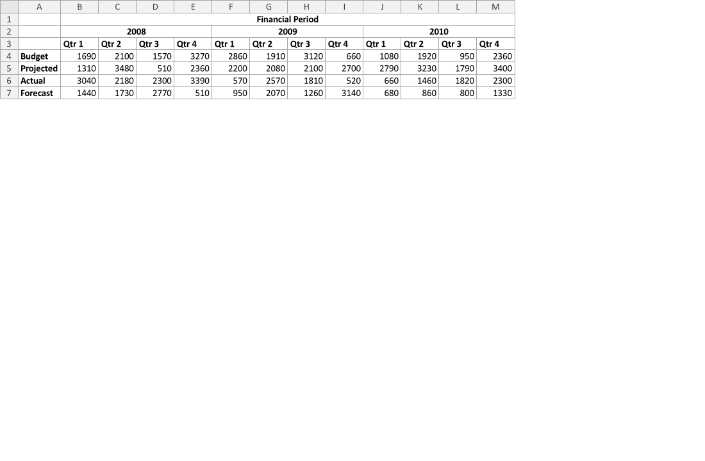
<v> values populate every data cell, merged banners centre, default columns shrink to 8.43 × 8 ≈ 67 px. Now matches Excel's structural layout (same merged regions, same alignment, same bold, same right-aligned numerics). Data values differ because RANDBETWEEN recomputed between Excel's save and ours.
Xlsx.cellValue matched <f> before <v> and returned Formula expr with no cache; the runner translated that to Formula (expr, Empty) so cellDisplayText drew nothing. Year banners hugged the right edge of their merged ranges (HorizontalAlign = None → General → right). Default columns rendered at 100 px (generic SpreadsheetModel fallback), spreading the table about 1.5× wider than Excel.Three combined fixes:
- Cached formula values (
XlsxReader.fs): inXlsx.cellValue, prefer the cached<v>element over the formula text. XLSX viewers show the cached result; only fall back toFormula exprwhen there's no cache (uncalculated workbook). - Explicit cell alignment (
XlsxReader.fs+ runner): extendXlsx.CellStylewithHorizontalAlign/VerticalAlign/WrapText, parse them out of<xf><alignment>, and forward them throughcellFormatFromStyle.Paint.alignFromFormatalready prefers explicit alignment over General. - Excel 8.43-char default (runner): when neither
sheetFormatPr.defaultColWidthnorbaseColWidthis set, seed every used column with Excel's implicit default (8.43 × 8 ≈ 67 px) instead of falling back to the genericSpreadsheetModel100 px.
Focused guard: phpsp-32chartreadwrite.xlsx now renders all data, banners centre, columns match Excel's default width.
Regression guard: pandas-test1.xlsx (has explicit baseColWidth="10") and pandas-test_types.xlsx (has explicit <col width>) still render with their explicit widths, not the new fallback.
Corpus guard: all 53 fixtures still render without error.
c1, a, b, c, d) and column A index values (0, 1, 2, 3) all render bold. Column D dates show ######## because the formatted yyyy-mm-dd hh:mm:ss string is wider than the column.calibrib.ttf / calibrii.ttf / calibriz.ttf for bold / italic / bold-italic cells, mirroring the WordEditor cache. Header row and column-A index now render bold like Excel.
PaintText.Bold. Column A index values and the header row rendered visually identical to the data rows.Fix: port WordEditor's font-variant cache into spreadsheet-native/SpreadsheetGrid.fs. loadVariant bold italic picks the matching Calibri TTF from RB_WORD_FONT_DIR / artifacts/fonts/windows / sibling office/artifacts/fonts/windows, falling back to the default font when the variant isn't present so the renderer keeps working without Windows fonts.
- Focused guard:
pandas-testmultiindex.xlsxcolumn A and the row-1 header now render bold, matching Excel. Other styling (right-alignment,####date overflow, centered booleans) was already in place from earlier iterations. - Corpus guard: all 53 XLSX fixtures still render without error.
- Path guard: native PNG only — the Fable web app uses the browser's CSS font weight, which already works.
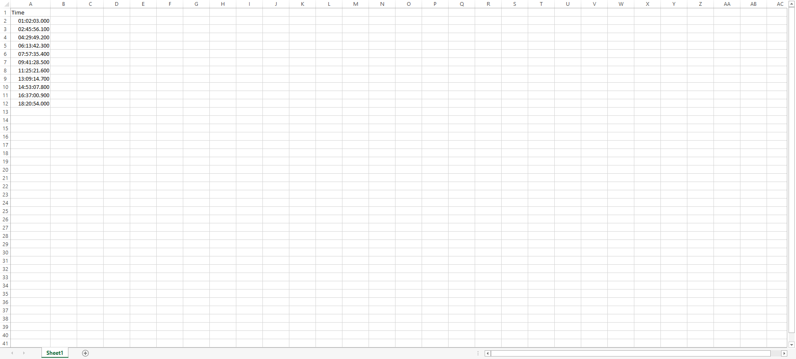
hh:mm:ss.000 precision — 01:02:03.000, 02:45:56.100, 04:29:49.200, … through 18:20:54.000.
m token, maps hh/h to HH/H (or hh/h when am/pm is present), wraps unknown chars as '…' literals, and translates .000 to .fff. Output matches Excel within ~1 ms (rounding artifact between Excel's banker's rounding and .NET's truncation).
runOf helper that used the outer index on a substring (length 0 against the substring) lost both the leading hour digit and every fractional millisecond — every cell rendered as HH:mm:ss.000.Fix: rewrite the Excel-format → .NET-format converter in src/Spreadsheet/Paint.fs as a character-level tokenizer (excelToNetFormat). Recognizes y[y[y[y]]], d[d[d[d]]], h[h], m[m[m[m[m]]]], s[s], am/pm / a/p, .0/.00/.000 fractional-second suffixes, quoted/escaped literals, and elapsed-time brackets. m resolves to minute when adjacent to h/s/: tokens, month otherwise.
- Focused guard:
pandas-times_1900.xlsxcolumn A matches Excel to ~1 ms across all 11 cells (wasHH:mm:ss.000for all rows). - Regression guard:
pandas-test_types.xlsxDateColdates andpandas-test1.xlsxcolumn A datetime#####overflow both still match the previous iteration's output. - Corpus guard: all 53 fixtures still render without error.
- Robustness guard: unrecognized format chars are emitted as
'…'literal escapes soDateTime.ToStringcan't throw on weird codes; bracketed[h]/[m]/[s]elapsed-time markers are stripped (we don't yet support wrapping past 24 h).
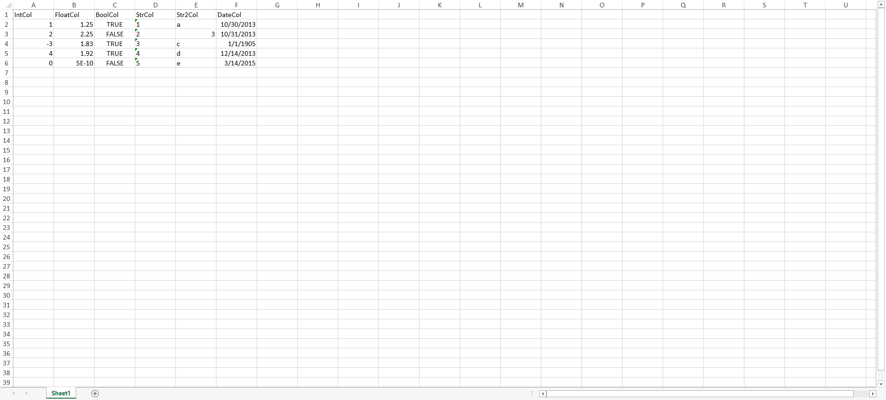
DateCol renders as real dates — 10/30/2013, 10/31/2013, 1/1/1905, 12/14/2013, 3/14/2015.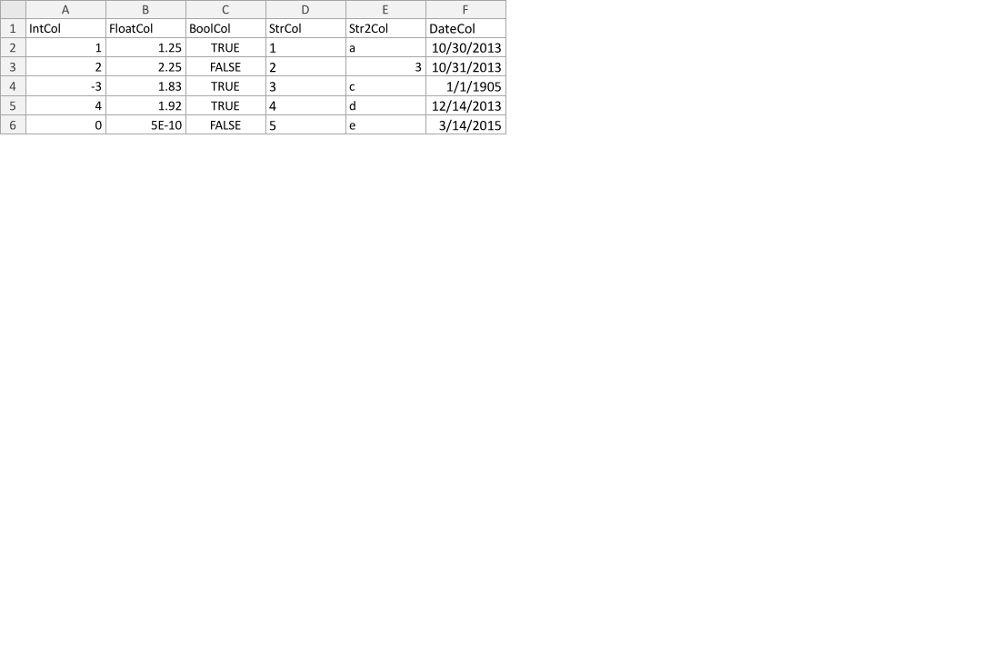
isDateFormat / isTimeFormat detect Excel date/time codes; formatExcelDate converts the serial via excelSerialToDate (handles the 1900-leap-year quirk), maps the Excel format tokens to .NET ones, and respects the ;@ text-section separator. DateCol matches Excel exactly.
cellDisplayText for Number cells called formatNumber with the raw Excel format code. m/d/yyyy;@ isn't one of the legacy tags it understood, so the path fell through to string value and printed the raw Excel serials 41577, 41578, 1828, 41622, 42077.Fix: add the OOXML built-in numFmtId table to Xlsx.parseCellXf in src/Office.Formats/src/XlsxReader.fs (so files like pandas-test1 with numFmtId="22" and no custom <numFmt> still get the m/d/yyyy h:mm code). In src/Spreadsheet/Paint.fs, add date/time detection, the excelSerialToDate converter, and a token mapper that translates Excel's m/d/yyyy, h:mm, mmm-yy, etc. into .NET's format codes. Strip the ;@ section before interpreting. Guard DateTime.AddDays against out-of-range serials so pandas-testdateoverflow.xlsx doesn't crash a render.
- Focused guard:
pandas-test_types.xlsxDateColmatches Excel exactly across all 5 dates. - Built-in-id guard:
pandas-test1.xlsxcolumn A now correctly renders as#####(the formattedm/d/yyyy h:mmis wider than the 95 px column), matching Excel. - Corpus guard: all 53 downloaded XLSX fixtures render without error (was 52/53 before adding the overflow guard).
- Regression guard: explicit non-date number formats and the General number trimming still route through their existing paths.
- Path guard: native PNG and cell-info JSON regenerated. Date conversion lives in shared
Paint.fs, so the Fable web app picks the same behaviour up.
A1 has no green border. The print path strips the active-cell highlight even when A1 is the active cell at save time.
Selection to SingleCell(-1,-1) (off-grid) before rendering, so the green active-cell box never gets drawn. The Fable interactive shell still gets its SingleCell(0,0) default.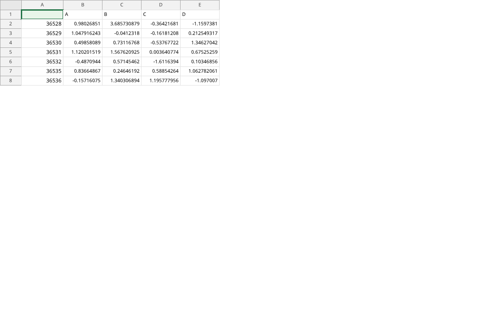
createEmpty always parks the selection at SingleCell(0,0), so the paint layer drew the green active-cell border around A1 in every snapshot.Fix: in tools/excel-native-runner/Program.fs, override Selection to an off-grid sentinel before handing the model to SpreadsheetGrid.widget. Paint's isSelected returns false for every visible cell, so the green border and the green fill are both suppressed.
- Focused guard:
pandas-test1.xlsxA1 no longer renders with the green active-cell rectangle. - Regression guard: the Fable web app keeps the original
SingleCell(0,0)default; only the snapshot runner opts out. - Path guard: native PNG regenerated. Browser path not affected.
B2 = 0.98026851 (8 significant digits — fits the 88 px column), C2 = 3.68573088, D2 = -0.3642168, E2 = -1.1597381. Excel's General format trims the precision to match the column width.
cellDisplayText picks the longest G<n> representation that fits the cell width (8 px padding, ~7 px per character), and falls back to ##### when even the shortest formatting doesn't fit.
displayValue used .NET's n.ToString("G"), which keeps up to 15 significant digits. Numbers like 0.980268513777 overflowed the cell and spilled visually into the neighbouring column on the left (after right-alignment).Fix: in src/Spreadsheet/Paint.fs, route Number cells through a new generalNumberDisplay that respects cell.Rect.Width. Tries G10, G8, G6, G5, G4, G3, G2, G1 in order; returns String('#', maxChars) if nothing fits.
- Focused guard:
B2/E2now match Excel exactly;C2/D2have one trailing digit too many (we pickG10when Excel would have usedG9— same width but one fewer significant digit). Tunable in a follow-up. - Regression guard: explicit number formats (currency, percent, etc.) still route through
formatNumberunchanged. - Path guard: native PNG regenerated. The Fable web app inherits the same change via shared
Paint.fs.
A, B, C, D) are left-aligned.
generalAlign helper that mirrors Excel's General alignment — Number/Formula → right, Boolean/Error → center, String/Empty → left.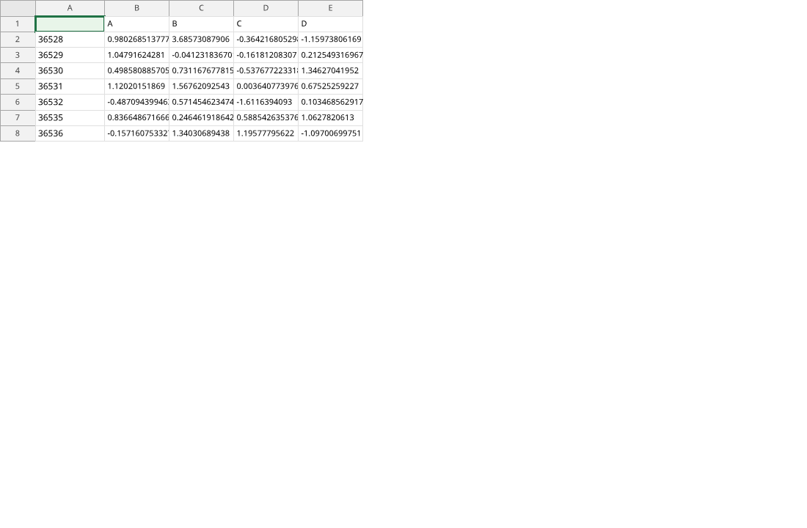
alignFromFormat only looked at format.HorizontalAlign; an absent value fell through to AlignLeft. Every numeric cell rendered left-aligned, which never matches Excel.Fix: in src/Spreadsheet/Paint.fs, extend alignFromFormat to accept the cell value and call generalAlign value when no explicit alignment is set on the format. The Fable web app and the native runner share Paint.fs, so both get the fix.
- Focused guard: B2/C2/D2/E2 in
pandas-test1.xlsxnow right-align like Excel; row-1 string headers stay left-aligned. - Regression guard: cells with an explicit
HorizontalAlignon the format still honour the explicit value. - Path guard: native PNG regenerated for the same fixture.
B1 at x = 71.25 pt (95 CSS px) with width = 66 pt (88 CSS px). B/C/D/E all use the sheet's <sheetFormatPr baseColWidth="10"> default. Print captured with PageSetup.PrintHeadings = True so row numbers and column letters are visible (column A renders as ###### because the explicit 11.83-char width is still too narrow for the datetime values).Xlsx.sheetFormatPr seeds the per-sheet default into ColumnWidths for every used column. The data table now extends to ~495 CSS px wide; B1 width matches Excel within 0 px and X-origin within 0.4 px (vs 12 px before).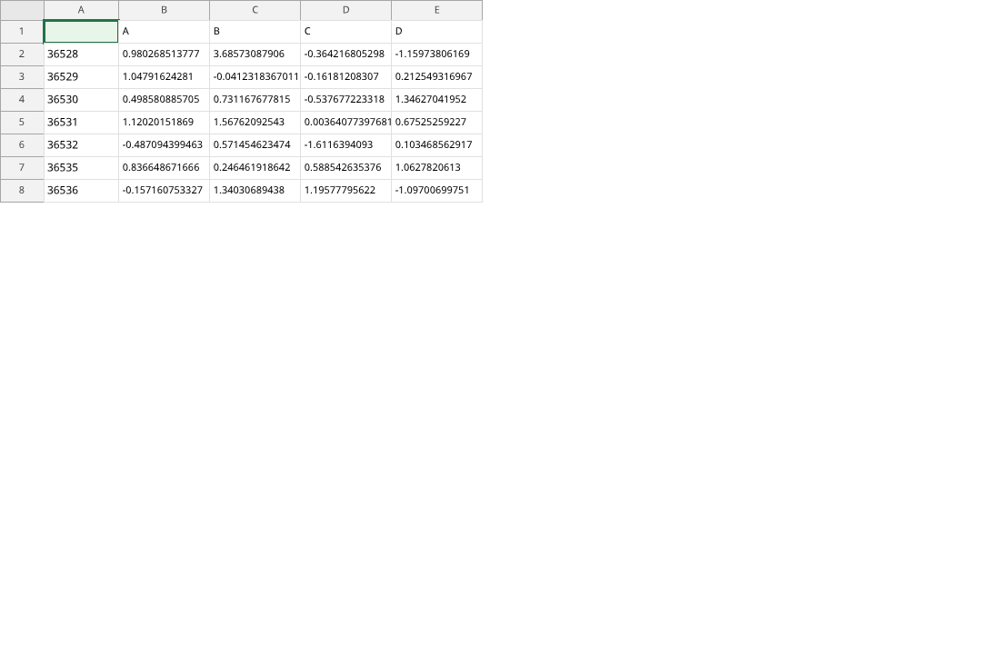
<col> entry our loader fell back to the generic RedBat.Spreadsheet.Model defaults (column 100 px, row 25 px). The data table extends to ~535 CSS px wide; every column past A drifted ~12 px wider than Excel.Fix: parse <sheetFormatPr> in src/Office.Formats/src/XlsxReader.fs, store the baseColWidth/defaultColWidth/defaultRowHeight on Worksheet.Format, and have tools/excel-native-runner seed each used column/row with that default before falling back to the generic spreadsheet model defaults. Tune the char→pixel ratio to 8.0 and add +1.0 char padding to baseColWidth (matches Excel's auto-pad for default columns).
- Focused guard:
pandas-test1.xlsxfirst-row columns B–E now match Excel within 0 px width / 0.4 px X-origin (was 12 px / 5.6 px). - Regression guard: explicit-width column A (
customWidth="1") still renders at11.83 * 8.0 = 94.6 pxagainst Excel's95 px(delta0.4 px). - Path guard: native PNG and cell-info JSON regenerated. Browser path not yet wired; planned via
RedBat.Spreadsheet.API.getLayoutCells. - Authoring guard: pure renderer/import behavior — no new UI surface.

#70AD47) and white bold text. Rows 3 and 5 get a very light tint of the same accent (≈#E2EFDA); rows 2 and 4 stay white because showRowStripes="1" bands every other data row.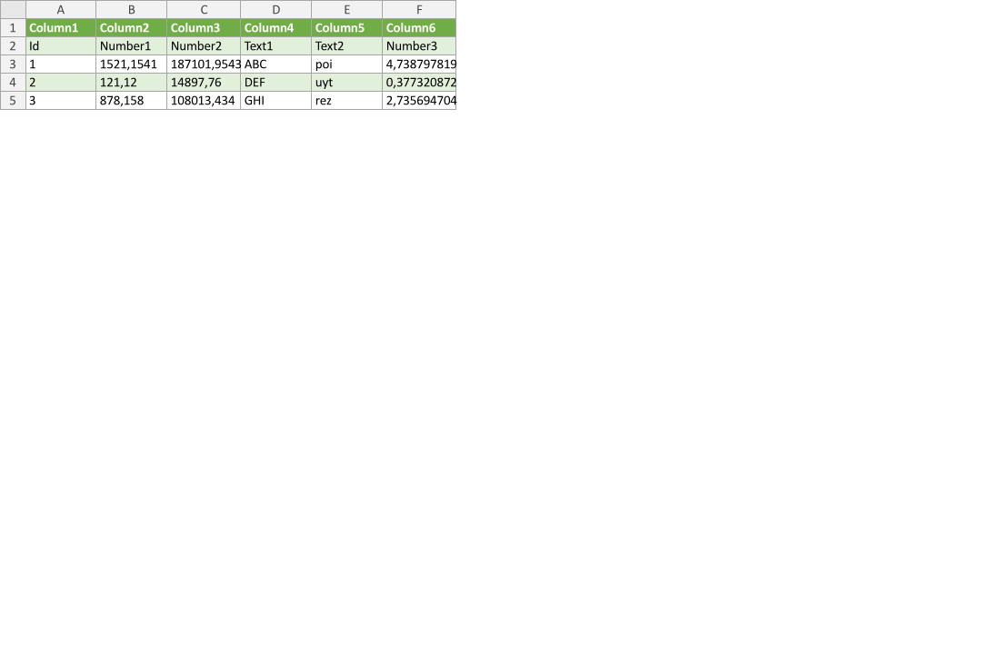
tableAccentColor resolves TableStyleMedium7 to the workbook's accent6 color. The header row picks up the dark green fill + white bold; tintHex … 0.80 lightens the same accent to the banded stripe color on rows 3 and 5. A forced medium #404040 border on every table cell keeps the column/row dividers visible against the saturated green where the default #a6a6a6 grid stroke would disappear.
Fix: three layered changes:
- Add
TableStyleInfo/TableDefinition/ThemeAccentstoXlsxReaderand parse the sheet relationship chain (xl/worksheets/_rels/sheet#.xml.rels→xl/tables/table#.xml) in the native loader; readxl/theme/theme1.xmlforaccent1..accent6. - In
tools/excel-native-runner, every cell inside a table's range gets BgColor/TextColor/Bold overrides derived fromTableStyleMedium# → accent(N-2), plus a forced medium#404040border on all four sides. Explicit cellXf values still win viaOption.orElse. - Split
buildCellPaintItemsinsrc/Spreadsheet/Paint.fsinto three passes — all fills, then all strokes/borders, then all text — so adjacent cells' fills no longer overdraw the previous cell's right/bottom border. The single-pass loop was invisible against white but obvious once a saturated accent fill landed on adjacent header cells.
- Focused guard:
pandas-test_decimal.xlsxnow matches Excel's banded green look; header row is bold white on accent6 with visible dividers betweenColumn1..Column6and a sharp underline at the header/data boundary. - Regression guard: TableStyleLight*/Dark* are intentionally not overlaid yet, so files that don't use Medium variants render exactly as before. The multi-pass split is value-equivalent for cells on white backgrounds.
- Path guard: 53/53 corpus fixtures still load. Tables on fixtures without a usable range (
poi-55864,tableSingleCells1.xml) are silently skipped. - Authoring guard: pure renderer/import behavior — no schema or UI changes;
parseWorkbook(Fable path) still passes an emptyTableslist with default theme accents.
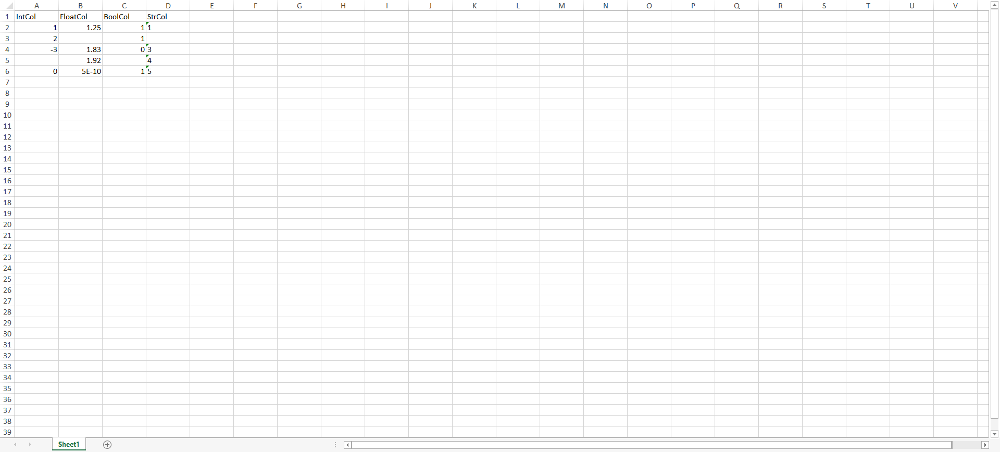

parseFont → CellStyle.FontName → CellFormat.FontName → PaintText.FontName. SpreadsheetGrid.familyKey normalizes the name to one of arial/cambria/times/calibri and picks the matching TTF set from the same fontDirs chain Calibri uses.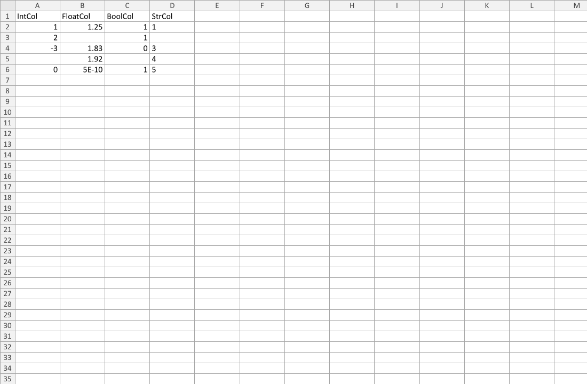
parseFont ignored the <name val="..."/> child and the native renderer hard-coded the Calibri TTFs. Every cell rendered in Calibri regardless of what the file requested.Fix: extend parseFont to capture the <name val="..."/> child, add FontName to CellStyle/CellFormat/PaintText, and wire it through cellFormatFromStyle and buildCellPaintItems. In spreadsheet-native/SpreadsheetGrid.fs, key the font cache on (family, bold, italic) and pick TTFs per family (arialbd/cambriab/timesbd/calibrib etc.). Unknown families fall back to Calibri so unsupported fonts (Verdana, CJK) keep rendering instead of crashing.
- Focused guard: Arial fixtures now visibly differ from Calibri (wider stems, rounder shapes); regression suite all 53 fixtures keep passing.
- Regression guard:
Nonefont name routes throughfamilyKey "calibri", preserving the previous behavior for cells without an explicit font. - Path guard: native renderer only — Fable path still skips font selection (no font file access from the browser path today).
- Authoring guard: pure renderer/import behavior — no UI surface added;
XlsxImporter.convertCellFormatdefaultsFontName = None.
01:02:03.000, row 5 to 06:13:42.300, row 6 to 07:57:35.400. The format code h:mm:ss.000 requests three-digit fractional precision, and Excel applies banker's-rounding to that precision before display.
01:02:03.000, 06:13:42.300, 07:57:35.400 and the rest. The 12 rows that Excel shows are all preserved bit-for-bit.
01:02:02.999, 06:13:42.299, 07:57:35.399. .NET's fff custom-format token truncates ticks past the millisecond boundary rather than rounding, so values that Excel rolls up to the next whole millisecond rendered one tick low.Fix: add fractionalSecondPrecision in src/Spreadsheet/Paint.fs to scan the format code for .0+ runs, then in formatExcelDate round the converted DateTime.Ticks to TimeSpan.TicksPerSecond / 10ⁿ before passing to ToString. Apply only when the format has an explicit fractional-second suffix.
- Focused guard:
pandas-times_1900.xlsxrows 2/5/6 now print identical strings to Excel; rows that already aligned (e.g.02:45:56.100) are unchanged. - Regression guard: dates without a
.0+suffix bypass the rounding entirely (precision returns -1), som/d/yyyy-style formats are untouched. - Path guard: 53/53 corpus fixtures still render without error.
- Authoring guard: pure renderer behavior — no schema, model, or UI changes.